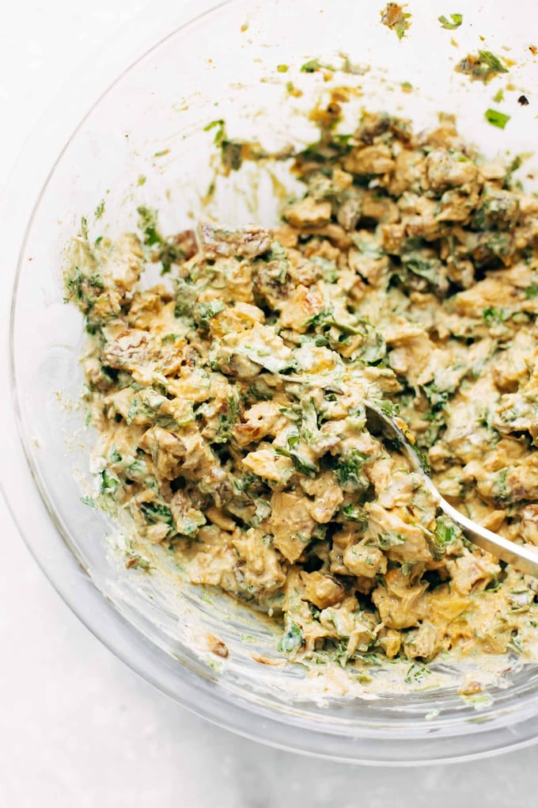

Goddess Curry Chicken Salad
Description
This Curry Chicken Salad is super clean and SO delicious. Loaded with
spiced chicken, golden raisins, pistachios, herbs, and Greek yogurt +
olive oil as a stand-in for mayo.

Ingreidents
- 1 lb. chicken breasts
- 2 teaspoons curry powder (more to taste)
- 1 teaspoon garlic powder
- 1 teaspoon onion powder
- 3/4 cup Greek yogurt
- 2 tablespoons olive oil or water
- 2 tablespoons honey
- 1/4 cup golden raisins
- 1/4 cup cilantro and/or parsley
- salt and pepper to taste
Instructions
-
Cook the chicken: Cut the chicken breasts in half horizontally so they
are very thin. Sprinkle chicken with curry powder, garlic powder, and
onion powder. Season with salt and pepper. Sauté in a nonstick skillet
over medium high heat with a drizzle of olive oil until golden brown and
cooked through. When cooled, chop the chicken into small pieces and
chill in the fridge.
-
Assemble your Curry Chicken Salad: Once the chicken is cool enough, mix
in a medium bowl with all remaining ingredients. Season to taste with
more curry powder, onion powder, garlic powder, and (obvi) salt and
pepper. Serve over greens, on a croissant, on toast, in a wrap, or my
personal favorite: on an everything bagel.